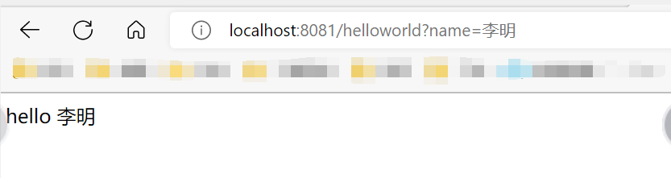
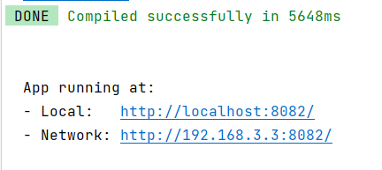
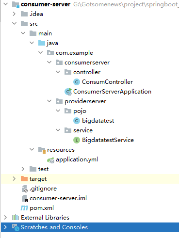

springboot框架整合大全（一）
Spring翻译为中文是“春天”，的确，在某段时间内，它给Java开发人员带来过春天，但是随着项目规模的扩大，Spring需要配置的地方就越来越多，夸张点说，“配置两小时，Coding五分钟”。这种纷繁复杂的xml配置随着软件行业一步步地发展，必将逐步退出历史舞台。此时，springboot的出现改变了java的开发，从此变得便利。
简介
Spring Boot是由Pivotal团队提供的全新框架，其设计目的是用来简化新Spring应用的初始搭建以及开发过程。该框架使用了特定的方式来进行配置，从而使开发人员不再需要定义样板化的配置。通过这种方式，Spring Boot致力于在蓬勃发展的快速应用开发领域(rapid application development)成为领导者。
SpringBoot所具备的特征有：
- 可以创建独立的Spring应用程序，并且基于其Maven或Gradle插件，可以创建可执行的JARs和WARs；
- 内嵌Tomcat或Jetty等Servlet容器；
- 提供自动配置的“starter”项目对象模型（POMS）以简化Maven配置；
- 尽可能自动配置Spring容器；
- 提供准备好的特性，如指标、健康检查和外部化配置；
- 绝对没有代码生成，不需要XML配置。
在过去，开发者要让一个Spring项目启动，往往需要配置很多的xml配置文件，但是在使用SpringBoot之后，开发人员无需写一行xml，就可以直接将整个项目启动，这种“零配置”的做法减轻了开发人员很多的工作量，可以让开发人员一心扑在业务逻辑的设计上，使项目的逻辑更加完善。
除此之外，其采用了JavaConfig的配置风格，导入组件的方式也由原来的直接配置改为@EnableXXXX，这种纯Java代码的配置和导入组件的方式，使代码看上去更加的优雅，所以SpringBoot如今受到大小公司和大多数程序员的青睐，不是没有原因的。
SpringBoot之所以可以做到简化配置文件直接启动，无外乎是其内部的两种设计策略：开箱即用和约定大于配置。
开箱即用：在开发过程中，通过maven项目的pom文件中添加相关依赖包，然后通过相应的注解来代替繁琐的XML配置以管理对象的生命周期。
约定大于配置：由SpringBoot本身来配置目标结构，由开发者在结构中添加信息的软件设计范式。这一特点虽降低了部分灵活性，增加了BUG定位的复杂性，但减少了开发人员需要做出决定的数量，同时减少了大量的XML配置，并且可以将代码编译、测试和打包等工作自动化。
说明，以下操作都会在idea中运行
springboot启动原理
springboot是基于springmvc、spring容器和Mybatis的整合容器。
- 初始化监听器，以及添加到SpringApplication的自定义监听器。
- 发布ApplicationStartedEvent事件，如果想监听ApplicationStartedEvent事件，你可以这样定义：public class ApplicationStartedListener implements ApplicationListener，然后通过SpringApplication.addListener(..)添加进去即可。
- 装配参数和环境，确定是web环境还是非web环境。
- 装配完环境后，就触发ApplicationEnvironmentPreparedEvent事件。
- 如果SpringApplication的showBanner属性被设置为true，则打印启动的Banner。
- 创建ApplicationContext，会根据是否是web环境，来决定创建什么类型的ApplicationContext。
- 装配Context的环境变量，注册Initializers、beanNameGenerator等。
- 发布ApplicationPreparedEvent事件。
- 注册springApplicationArguments、springBootBanner，加载资源等
- 遍历调用所有SpringApplicationRunListener的contextLoaded()方法。
- 调用ApplicationContext的refresh()方法,装配context beanfactory等非常重要的核心组件。
- 查找当前ApplicationContext中是否注册有CommandLineRunner，如果有，则遍历执行它们。
- 发布ApplicationReadyEvent事件，启动完毕，表示服务已经可以开始正常提供服务了。通常我们这里会监听这个事件来打印一些监控性质的日志，表示应用正常启动了。
SpringBoot会触发其他的一些事件，这些事件按下列顺序触发：
- ApplicationStartingEvent：项目刚启动时触发，此时除了注册监听器和初始器之外，其他所有处理都没有开始；
- ApplicationEnvironmentPreparedEvent：上下文得到环境信息之后触发，此时上下文创建还没有创建；
- ApplicationPreparedEvent：bean的定义信息加载完成之后触发，此时bean还没有初始化；
- ApplicationReadyEvent：在所有bean初始化完毕，所有回调处理完成，系统准备处理服务请求时触发；
- ApplicationFailedEvent：启动过程出现异常时候触发。
开箱即用-springboot项目搭建
前面介绍了springboot的两种内部设计策略，想要真正体验到springboot的开箱即用，还在springboot的项目搭建上。
首先说明Springboot的各种版本：
- CURRENT：最新版本（但不一定稳定）
- GA：General Availability,正式发布的版本，官方推荐使用该版本，国外很多项目都是使用GA来表示正式发布版本的
- SNAPSHOT：快照版，可以稳定使用，且该版本会一直进行小量的优化和改进
- PRE：预览版，主要是用来内部开发人员和测试人员测试使用，因此不建议使用
- RC：Release，该版本已经相当成熟了，基本上不存在导致错误的BUG，与即将发行的正式版相差无几。
日常使用中通常选择GA版 ，版本稳定性排序为：PRE < SNAPSHOT < RC < GA
start.spring.io
进入快速创建SpringBoot项目的网址Spring Initializr，选择项目的各大选项：
- Project：说明是什么类型的项目
- Maven Project：Maven项目（默认）
- Gradle Project：Gradle项目
Language：使用什么计算机语言开发
- Java（默认）
- Kotlin
- Groovy
Spring Boot：选择Springboot版本（版本不一一列举出来）
- 2.6.7（SNAPSHOT）（笔者选择这个）
Project Metadata：项目的大致情况
- Group：开发团队，一般为com.xxxx
- Artifact：项目名称
- Name：项目名
- Description：项目描述
- Package name：项目的包名
- Packaging：打包的类型
- Jar：普通的Jar包（默认）
- War：网络War包
- Java：java版本（版本不一一列举出来）
- 8（笔者选择）
在完成项目填写后，点击GENERATE即可生成项目，浏览器会自动下载保存到本地
Intellij IDEA Spring Initializr
日常使用idea的时候，使用Spring Initializr去创建项目会十分麻烦，这个时候可以在idea里面的Spring Initializr去创建springboot项目，idea会通过调用start.spring.io创建springboot的项目，十分方便。
打开File -> New -> Project，在New Project窗口中点击Spring Initializr，之后点击Next（若没有设置SDK，请设置IDEA的SDK，Choose starter service URL中选择Default即可）。
在Spring Initializr Project Settings的窗口的设置和在Spring Initializr网页中的设置是一模一样的，参数详情查看上一节即可。输入参数完毕后，点击Next，之后选择Web -> springboot web即可。输入项目名称后，即可开始使用springboot项目。
文件结构
在进行项目搭建后，文件大致结构如下：
- src：项目的主要文件
- main：放置java包的文件夹
- com.xxx：java包
- xxxxApplication.java：springboot启动类
- resources：资源文件
- static：存放静态文件（css、js等）
- templates：存放html文件等
- application.properties：springboot的配置文件，可修改为yml
- main：放置java包的文件夹
- .gitignore：上传git需要忽略的文件
- pom.xml：maven的pom配置文件，用于加入新的第三方依赖
值得注意的是，在html引入css、js文件夹时，只需要按照同级目录的方式引入即可，以bootstrap为例：
<link rel="stylesheet" href="css/bootstrap.min.css"/>项目运行
首先删除一些无关紧要的文件，分别为.mvn、HELP.md、mvnw、mvnw.cmd，使项目保持整洁。该操作为可选操作。
打开src -> main -> java -> com -> 包名 -> xxxApplication.java，可看到：
package com.example.demo;
import org.springframework.boot.SpringApplication;
import org.springframework.boot.autoconfigure.SpringBootApplication;
@SpringBootApplication
public class DemoApplication {
public static void main(String[] args) {
SpringApplication.run(DemoApplication.class, args);
}
}这就是springboot的运行程序，点击run，可以看到整个项目开始运行，若看到Started DemoApplication in 1.488 seconds (JVM running for 2.522)为项目运行成功。查看Tomcat started on port(s): 8080 (http) wih context path ''为项目运行的端口号。至此，springboot搭建完成。
spring-boot-starter
SpringBoot的一大优势就是Starter，由于SpringBoot有很多开箱即用的Starter依赖，使得开发变得简单，不需要过多的关注框架的配置。
在日常开发中，我们也会自定义一些Starter，特别是现在微服务框架，我们一个项目分成了多个单体项目，而这些单体项目中会引用公司的一些组件，这个时候我们定义Starter，可以使这些单体项目快速搭起，我们只需要关注业务开发。
例如spring-boot中集成redis，只需要pom.xml中引入spring-boot-starter-data-redis，配置文件中加入spring.redis.database等几个关键配置项即可
常用的starter还有spring-boot-starter-web、spring-boot-starter-test、spring-boot-starter-jdbc。
spring-boot-starter-web
详细的pom.xml配置如下：
<dependency>
<groupId>org.springframework.boot</groupId>
<artifactId>spring-boot-starter-web</artifactId>
</dependency>点进去，可以看到：
spring-boot-starter，里面封装了：
- springboot（spring容器）
- spring-boot-autoconfigure（springboot的自动装配）
- spring-boot-starter-logging（springboot的日志）
- jakarta.annotation-api
- spring-core
- snakeyaml（yml配置）
<dependency>
<groupId>org.springframework.boot</groupId>
<artifactId>spring-boot-starter</artifactId>
<version>2.6.6</version>
<scope>compile</scope>
</dependency>spring-boot-starter-json，封装了json相关的包
<dependency>
<groupId>org.springframework.boot</groupId>
<artifactId>spring-boot-starter-json</artifactId>
<version>2.6.6</version>
<scope>compile</scope>
</dependency>spring-boot-starter-tomcat，封装了tomcat相关的包
<dependency>
<groupId>org.springframework.boot</groupId>
<artifactId>spring-boot-starter-tomcat</artifactId>
<version>2.6.6</version>
<scope>compile</scope>
</dependency>spring-web，封装了spring的bean相关内容
<dependency>
<groupId>org.springframework</groupId>
<artifactId>spring-web</artifactId>
<version>5.3.18</version>
<scope>compile</scope>
</dependency>spring-webmvc，封装了springmvc的内容
<dependency>
<groupId>org.springframework</groupId>
<artifactId>spring-webmvc</artifactId>
<version>5.3.18</version>
<scope>compile</scope>
</dependency>application.yml
修改application.properties为application.yml，理由如下：
- 如果工程中同时存在application.properties文件和application.yml文件，yml文件会先加载
yml文件通过
：来分层，结构上有比较明显的层次感yml配置文件上比properties简洁
存放位置
resources文件夹
配置细节
yml采用树状结构，结构如下
server:
port: 8081改配置将整个项目的端口改为了8081，以下是springboot的jdbc的yml配置
spring:
datasource:
# UTC： Coordinated Universal Time, 国际协调时间，也称世界标准时间。
# 设置国际标准时间能够保证mysql连接不会出现时区错误，并且保证编号为UTF-8
url: jdbc:mysql://localhost:3306/test?characterEncoding=utf-8&serverTimezone=UTC
username: ****
password: ****
driver-class-name: com.mysql.jdbc.Driver
security: # 简单配置springboot-Security的验证登录密码和账号
user:
name: admin
password: admin
mybatis:
mapper-locations: classpath:/mapper/*Mapper.xml # mapper文件存放位置
type-aliases-package: smg.****.dao # mapper配置类存放包里面的参数详细会在以下章节有解释，只是展示Yml是如何配置的
Controller(控制器)的使用
在使用controller前，必须要引入spring-boot-starter-web这个包
新建Controller
首先新建类FirstController，并且在类前加注解@RestController表示该类为一个控制器
新建方法，书写如下：
@RequestMapping("/helloworld")
public String helloworld(String name){
System.out.println("从页面返回了"+name);
return "hello " + name;
}@RequestMapping("/helloworld")中的地址，在浏览器中浏览它会调用该地址下的方法helloworld，从而执行方法中的逻辑，可以是数据库操作，计算等等
在浏览器中输入localhost:8081/helloworld?name=李明，可以看到返回成功

在进行更加详细的操作之前，说一下作者理解的【接口】。
接口，这里特指软件的接口，作者认为是对某些请求进行出的一个生产者。对某个网站进行抓包的时候，可以看到不仅仅有网站本身的url，还有其他的一些奇奇怪怪的url，这些url就是所说的接口，编辑controller这个过程也是编辑接口的过程
接口有返回和请求的资源，接下来是说明pringboot中的controller可以接收、返回什么类型
ModelAndView
顾名思义，该类可以封装后台处理的数据，并返回视图，不建议使用
@RequestMapping("/modelandview")
public ModelAndView modelandviewTest() {
String text = "helloworld";
ModelAndView mav = new ModelAndView();
mav.addObject("text", text);
mav.setViewName("index.html");
return mav;
}Model 和 String
在控制器中返回视图（前端页面）的路径，后台处理完毕后会返回到该视图（前端页面）路径，在方法的形参中加入model，然后将数据装在model里面，会一并发送到前端视图中，该方法为官方推荐方法
@RequestMapping(value = "/index")
public String index(Model model) {
String text = "helloworld";
model.addAttribute("text", text);
return "index";
}带有数据资源的对象
有多个数据的时候，可以用对象封装并传入后端。注意不能用List作为形参。
新建一个名字叫QueryBean的类即可
@RequestMapping(value = "/bean")
public String bean(QueryBean qb) {
int id = qb.getId();
System.out.println(id);
return "index";
}ajax
该方法应该是最常用的方法之一
前后端交互的时候，数据格式用json，就可以用到该方法
返回值使用@ResponseBody作为响应体输出资源，形参中使用@RequestBody作请求体请求资源
@RequestMapping(value = "/json")
public @ResponseBody String json(@RequestBody QueryBean qb) {
System.out.println("这是我从AJAX传过来的数据"+qb.getId());
JSONObject jsonObject = new JSONObject();
jsonObject.put("name", "斗地主");
jsonObject.put("status", "success");
return jsonObject.toString();
}JSONObject类是org.json包里面的，引入依赖即可
<dependency>
<groupId>org.json</groupId>
<artifactId>json</artifactId>
<version>20220320</version>
</dependency>实例中用的对象包装json中的键值对，该方式传入的形参还可以有如下：
String。该方法可以将json中的某个键值对进行拆分拿值，方法中参数名称必须和data指定的json格式对应
比如说请求的json格式为：{name:"1234",password:"1234"}，接收的方法如下：
@RequestMapping("/login")
@ResponseBody
public string login(String name, String password){
System.out.println("这是我从AJAX传过来的数据"+name+" "+password);
JSONObject jsonObject = new JSONObject();
jsonObject.put("name", "张三");
jsonObject.put("status", "success");
return jsonObject.toString();
}Thymeleaf
什么是thymeleaf
稍微摘自官网的内容
- Thymeleaf is a modern server-side Java template engine for both web and standalone environments.
- Thymeleaf’s main goal is to bring elegant natural templates to your development workflow — HTML that can be correctly displayed in browsers and also work as static prototypes, allowing for stronger collaboration in development teams.
- With modules for Spring Framework, a host of integrations with your favourite tools, and the ability to plug in your own functionality, Thymeleaf is ideal for modern-day HTML5 JVM web development — although there is much more it can do.
机翻后，就是（作者稍作修改）：
- Thymeleaf是适用于Web和独立环境的现代服务器端Java模板引擎。
- Thymeleaf的主要目标是为您的开发工作流程带来优雅的模板，HTML可以在浏览器中正确显示，也可以作为静态原型工作，从而可以在开发团队中加强协作。
- Thymeleaf拥有用于Spring Framework的模块，与您喜欢的工具（例如springboot）的大量集成以及嵌入您自己的功能的能力，对于现代HTML5 JVM Web开发而言，Thymeleaf是理想的选择-尽管它还有很多工作要做。
不得不说Thymeleaf和JSP十分得像，但是他们之间的区别在于，不运行项目之前，Thymeleaf也是纯HTML（不需要服务端的支持）而JSP需要进行一定的转换，这样就方便前端人员进行独立的设计、调试。它有如下三个吸引人的特点：
- Thymeleaf 在有网络和无网络的环境下皆可运行，即它可以让美工在浏览器查看页面的静态效果，也可以让程序员在服务器查看带数据的动态页面效果。这是由于它支持 html 原型，然后在 html 标签里增加额外的属性来达到模板+数据的展示方式。浏览器解释 html 时会忽略未定义的标签属性，所以 thymeleaf 的模板可以静态地运行；当有数据返回到页面时，Thymeleaf 标签会动态地替换掉静态内容，使页面动态显示。
- Thymeleaf 开箱即用的特性。它提供标准和spring标准两种方言，可以直接套用模板实现JSTL、 OGNL表达式效果，避免每天套模板、该jstl、改标签的困扰。同时开发人员也可以扩展和创建自定义的方言。
- Thymeleaf 提供spring标准方言和一个与 SpringMVC 完美集成的可选模块，可以快速的实现表单绑定、属性编辑器、国际化等功能。
pom依赖引入
<!-- springboot thymeleaf starter -->
<dependency>
<groupId>org.springframework.boot</groupId>
<artifactId>spring-boot-starter-thymeleaf</artifactId>
</dependency>html引入
在html页面中引入：
<!DOCTYPE html>
<html xmlns:th=“http://www.thymeleaf.org”>
...
</html>准备工作基本完毕，注意：xmlns:th中th，个人认为是一个命名空间，在使用时需要引用，强烈建议不改，笔者查阅了大量的资料，几乎都是用的th
thymeleaf使用
这里列举最常用的，若有不足以后会慢慢添加
对象遍历
后端首先发送一个对象
import org.springframework.web.bind.annotation.RequestMapping;
@RequestMapping("/pageAction")
public String pageAction(Model model){
List<user> list = Service.queryList();
model.addAttribute("list",list);
return "page";
}user对象按照如下方式建立，注意生成getter和setter方法。Serializable是将对象序列化，建议搞上去。
import java.io.Serializable;
public class user implements Serializable {
private int id;
private String name;
}前端循环遍历对象：
<div th:each="list : ${list}">展示，注意要在遍历对象的盒子里边：
<div th:each="list : ${list}">
<span th:text="${list.name}"></span> <!-- 展示在页面上使用text -->
<input type="text" th:value="${list.name}" /><!-- 嵌套在input或其他用value -->
</div>可以使用#numbers.sequence()限制展示的数量
<li th:each="index:${#numbers.sequence(1,10)}">
<a th:text="${index}">1</a><!-- 这里会展示1->10 -->
</li>超链接
<a th:href="@{/pageAction(id = ${list.id},name = ${list.name})}">1</a>若点击1,url上会显示
localhost:8080/pageAction?id=xxx&name=xxx数据库资源管理
数据库连接池
springboot 内置默认支持HikariCP数据库连接池，这里使用Druid作为线程池，Druid是阿里巴巴的一个开源项目，是一个数据库连接池的实现，结合了C3P0、DBCP、PROXOOL等DB池的优点。Druid不但提供连接池的功能，还提供监控功能，可以实时查看数据库连接池和SQL查询的工作情况。
引入依赖
<dependency>
<groupId>org.springframework.boot</groupId>
<artifactId>spring-boot-starter-jdbc</artifactId>
</dependency>
<dependency>
<groupId>com.alibaba</groupId>
<artifactId>druid-spring-boot-starter</artifactId>
<version>1.2.8</version>
</dependency>可以看到，即使使用druid，也是需要引入spring-boot-starter-jdbc，否则就会报.....ClassNotFoundException: org....jdbc....embedded.EmbeddedDatabaseType。
原因是Spring Boot底层都是采用Spring Data的方式进行统一处理。EmbeddedDatabaseType类在spring-boot-starter-jdbc依赖中。
SpringBoot属于Spring“全家桶”组件，Druid属于阿里巴巴旗下开发产品，所以SpringBoot整合Druid并不是由Spring组件提供依赖，而是由阿里巴巴提供。
注意，引入依赖之后，必须要对其进行配置，否则会报错
配置编写
以下配置是比较简单的配置，包含了druid监控平台的开启
spring:
datasource:
# 数据库访问配置, 使用druid数据源(默认数据源是HikariDataSource)
type: com.alibaba.druid.pool.DruidDataSource
druid:
# 连接线程池
driver-class-name: xxxxx
url: xxxxx
username: root
password: 1234
# 访问druid监控
stat-view-servlet:
enabled: true
# 配置Servlet的访问路径：访问路径为/druid/**时，跳转到StatViewServlet，会自动转到Druid监控后台
url-pattern: /druid/*
# 是否能够重置数据
reset-enable: false
# 设置监控后台的访问账户及密码
login-username: root
login-password: 1234Mybatis
有了连接池，我们还需要进行数据库的增删查改的操作，这个时候就可以引入Mybatis了，Mybatis是一款优秀的持久层框架。它支持定制化SQL、存储过程以及高级映射。学习过ssm框架的都不会陌生，这里就不介绍它的作用了。
引入依赖
<dependency>
<groupId>org.mybatis.spring.boot</groupId>
<artifactId>mybatis-spring-boot-starter</artifactId>
<version>2.1.3</version>
</dependency>配置文件
mybatis:
# 指定 mapper.xml 的位置
mapper-locations: classpath:mapper/*.xml
# 扫描实体类的位置,在此处指明扫描实体类的包，在 mapper.xml 中就可以不写实体类的全路径名
type-aliases-package: com.example.beanMysql
连接mysql时，首先引入mysql的驱动包
<dependency>
<groupId>mysql</groupId>
<artifactId>mysql-connector-java</artifactId>
</dependency>配置文件中的url添加为jdbc:mysql://127.0.0.1:3306/database，driver-class-name添加为com.mysql.cj.jdbc.Driver
配置完毕，开始编写数据库交互
编写实体类
在Mysql中添加名叫Test01的表，属性为id和name，添加包TableBean，里面加入实体类Test01，对应表添加属性和getter和setter
public class Test01 {
private int id;
private String name;
public int getId() {
return id;
}
public void setId(int id) {
this.id = id;
}
public String getName() {
return name;
}
public void setName(String name) {
this.name = name;
}
}Mybatis映射编写
首先添加Mapper接口，加@Mapper标明该接口为映射类，也可以在启动类中添加@MapperScan注解扫描指定包下的 mapper 接口，这样就不用在每个 mapper 接口上都标注 @Mapper 注解了。
@Mapper
public interface Test01Mapper {
List<Test01> selectall();
}紧接着编写mapper.xml映射sql，在resources中添加mapper文件夹，并添加Test01.xml。该位置和配置文件中的mapper-locations: classpath:mapper/*.xml一致，添加如下文本：
<?xml version="1.0" encoding="UTF-8" ?>
<!DOCTYPE mapper
PUBLIC "-//mybatis.org//DTD Mapper 3.0//EN"
"http://mybatis.org/dtd/mybatis-3-mapper.dtd">
<!-- namespace：命名空间，用于隔离sql，用于动态代理 -->
<mapper namespace="com.example.Mapper.Test01Mapper">
<select id="selectall" resultType="Test01">
Select * from test01
</select>
</mapper>注意，namespace中的值为mapper接口的路径（参考如上代码），里面的id对应mapper接口中的每个方法，resultType就是返回的类型，虽然是写Test01，但是返回的也会用List装进去。这里不用写路径是因为配置中type-aliases-package: com.example.bean扫描了实体类的包，所以不用写
这样，mapper接口的工作准备完成
Service编写
首先编写service接口，新建Service包，添加Test01Service.java，方法与mapper接口一致
public interface Test01Service {
public List<Test01> selectall();
}其次编写实现类，添加Implement包，添加Test01Impl.java并implements Test01Service
@Service("Test01Service")
public class Test01Impl implements Test01Service {
@Autowired
Test01Mapper mapper;
@Override
public List<Test01> selectall() {
return mapper.selectall();
}
}controller调用
首先在controller里面织入mapper类
@Autowired
private Test01Service service;然后编写controller后直接调用即可
@RequestMapping(value = "/mybatisTest")
public String mybatisTest(){
List<Test01> list = service.selectall();
for (int i = 0; i < list.size(); i++) {
System.out.println("id: "+list.get(i).getId()+"name: "+list.get(i).getName());
}
return list.toString();
}开启项目，在浏览器中输入localhost:8081/mybatisTest，就可以看到调用了数据库并返回资源
实际上，controller也可以直接调用mapper接口来对数据库进行操作，但是不推荐，像
@Autowired
private Test01Mapper mapper;Redis
Redis 是完全开源的，遵守 BSD 协议，是一个高性能的 key-value 数据库。它的性能极高，Redis能读的速度是110000次/s，写的速度是81000次/s，具有丰富的特性。springboot中当然也可以整合redis，这里已经默认读者安装了redis，并且懂得了如何操作redis。
引入依赖
<dependency>
<groupId>org.springframework.boot</groupId>
<artifactId>spring-boot-starter-data-redis</artifactId>
</dependency>配置文件
spring:
redis:
# Redis服务器地址
host: 127.0.0.1
#Redis服务器连接端口
port: 6379
# Redis服务器连接密码（默认为空）
#password:
# Redis数据库索引（默认为0）
database: 1
# 连接超时时间（毫秒）
timeout: 5000工具类编写
来源：Spring Boot整合Redis代码详解，四步搞定！ - 腾讯云开发者社区-腾讯云 (tencent.com)
可以自行更改，使用时直接调用即可
package com.example.springbootredisdemo.Utils;
import java.util.Map;
import java.util.Set;
import java.util.concurrent.TimeUnit;
import org.springframework.beans.factory.annotation.Autowired;
import org.springframework.data.redis.core.StringRedisTemplate;
import org.springframework.stereotype.Component;
/**
* redis工具类
*/
@Component
public class RedisOperator {
// @Autowired
// private RedisTemplate<String, Object> redisTemplate;
@Autowired
private StringRedisTemplate redisTemplate;
// Key（键），简单的key-value操作
/**
* 实现命令：TTL key，以秒为单位，返回给定 key的剩余生存时间(TTL, time to live)。
*
* @param key
* @return
*/
public long ttl(String key) {
return redisTemplate.getExpire(key);
}
/**
* 实现命令：expire 设置过期时间，单位秒
*
* @param key
* @return
*/
public void expire(String key, long timeout) {
redisTemplate.expire(key, timeout, TimeUnit.SECONDS);
}
/**
* 实现命令：INCR key，增加key一次
*
* @param key
* @return
*/
public long incr(String key, long delta) {
return redisTemplate.opsForValue().increment(key, delta);
}
/**
* 实现命令：KEYS pattern，查找所有符合给定模式 pattern的 key
*/
public Set<String> keys(String pattern) {
return redisTemplate.keys(pattern);
}
/**
* 实现命令：DEL key，删除一个key
*
* @param key
*/
public void del(String key) {
redisTemplate.delete(key);
}
// String（字符串）
/**
* 实现命令：SET key value，设置一个key-value（将字符串值 value关联到 key）
*
* @param key
* @param value
*/
public void set(String key, String value) {
redisTemplate.opsForValue().set(key, value);
}
/**
* 实现命令：SET key value EX seconds，设置key-value和超时时间（秒）
*
* @param key
* @param value
* @param timeout
* （以秒为单位）
*/
public void set(String key, String value, long timeout) {
redisTemplate.opsForValue().set(key, value, timeout, TimeUnit.SECONDS);
}
/**
* 实现命令：GET key，返回 key所关联的字符串值。
*
* @param key
* @return value
*/
public String get(String key) {
return (String)redisTemplate.opsForValue().get(key);
}
// Hash（哈希表）
/**
* 实现命令：HSET key field value，将哈希表 key中的域 field的值设为 value
*
* @param key
* @param field
* @param value
*/
public void hset(String key, String field, Object value) {
redisTemplate.opsForHash().put(key, field, value);
}
/**
* 实现命令：HGET key field，返回哈希表 key中给定域 field的值
*
* @param key
* @param field
* @return
*/
public String hget(String key, String field) {
return (String) redisTemplate.opsForHash().get(key, field);
}
/**
* 实现命令：HDEL key field [field ...]，删除哈希表 key 中的一个或多个指定域，不存在的域将被忽略。
*
* @param key
* @param fields
*/
public void hdel(String key, Object... fields) {
redisTemplate.opsForHash().delete(key, fields);
}
/**
* 实现命令：HGETALL key，返回哈希表 key中，所有的域和值。
*
* @param key
* @return
*/
public Map<Object, Object> hgetall(String key) {
return redisTemplate.opsForHash().entries(key);
}
// List（列表）
/**
* 实现命令：LPUSH key value，将一个值 value插入到列表 key的表头
*
* @param key
* @param value
* @return 执行 LPUSH命令后，列表的长度。
*/
public long lpush(String key, String value) {
return redisTemplate.opsForList().leftPush(key, value);
}
/**
* 实现命令：LPOP key，移除并返回列表 key的头元素。
*
* @param key
* @return 列表key的头元素。
*/
public String lpop(String key) {
return (String)redisTemplate.opsForList().leftPop(key);
}
/**
* 实现命令：RPUSH key value，将一个值 value插入到列表 key的表尾(最右边)。
*
* @param key
* @param value
* @return 执行 LPUSH命令后，列表的长度。
*/
public long rpush(String key, String value) {
return redisTemplate.opsForList().rightPush(key, value);
}
}Controller调用
@Autowired
private RedisOperator redisOperator;
@RequestMapping("/redisTest")
public String redisTest(String value){
redisOperator.set("test",value);
String redis_key = redisOperator.get("test");
System.out.println("redis_key: "+redis_key+" 删除");
redisOperator.del("test");
return redis_key;
}Shiro
Apache Shiro是一个强大且易用的Java安全框架,执行身份验证、授权、密码和会话管理。使用Shiro的易于理解的API可以快速、轻松地获得任何应用程序，不论是从最小的移动应用程序到最大的网络和企业应用程序。
shiro有三个核心的组件，分别是：Subject, SecurityManager 和 Realms.
Subject：即“当前操作用户”。但是，在Shiro中，Subject这一概念并不仅仅指人，也可以是第三方进程、后台帐户（Daemon Account）或其他类似事物。它仅仅意味着”当前跟软件交互的东西”。Subject代表了当前用户的安全操作，SecurityManager则管理所有用户的安全操作。
SecurityManager：它是Shiro框架的核心，典型的Facade模式，Shiro通过SecurityManager来管理内部组件实例，并通过它来提供安全管理的各种服务。
Realm： Realm充当了Shiro与应用安全数据间的“桥梁”或者“连接器”。也就是说，当对用户执行认证（登录）和授权（访问控制）验证时，Shiro会从应用配置的Realm中查找用户及其权限信息。
shiro的大体框架为：
使用springboot也可以将其整合在里面，让自己的系统更加安全强大
引入依赖
<!-- shiro的核心包 -->
<dependency>
<groupId>org.apache.shiro</groupId>
<artifactId>shiro-core</artifactId>
<version>1.4.1</version>
</dependency>
<!-- log4j -->
<dependency>
<groupId>log4j</groupId>
<artifactId>log4j</artifactId>
<version>1.2.17</version>
</dependency>QuickStart
在进入学习之前，官方给出了一个快速开始的项目demo，详情如下
以下是QuickStart的全部代码，这里笔者自己注释了一下，分解可以看到有6个部分，大致是SecurityManagerFactory（安全管理的工厂，属于工厂模式）、SecurityManager（安全管理，三大核心之一）、Subject（对象，三大核心之一）、Authenticated（认证）、Role（角色）、Permitted（授权）
package com.example.quickstart;
import org.apache.log4j.Logger;
import org.apache.shiro.SecurityUtils;
import org.apache.shiro.authc.*;
import org.apache.shiro.config.IniSecurityManagerFactory;
import org.apache.shiro.mgt.SecurityManager;
import org.apache.shiro.session.Session;
import org.apache.shiro.subject.Subject;
import org.apache.shiro.util.Factory;
public class QuickStart {
private static Logger log = Logger.getLogger(QuickStart.class);
public static void main(String[] args) {
//1.创建shiro工厂
Factory<SecurityManager> factory = new IniSecurityManagerFactory("classpath:shiro.ini");
//2.创建SecurityManager
SecurityManager securityManager = factory.getInstance();
//3.SecurityUtils设置SecurityManager
SecurityUtils.setSecurityManager(securityManager);
//4.获取Subject对象 *
Subject currentUser = SecurityUtils.getSubject();
//5.创建shiro的session
Session session = currentUser.getSession();
session.setAttribute("someKey", "aValue");//设置session属性
String value = (String) session.getAttribute("someKey");
if (value.equals("aValue")) {
log.info("Retrieved the correct value! [" + value + "]");
}
//判断该用户是否被认证
if (!currentUser.isAuthenticated()) {
UsernamePasswordToken token = new UsernamePasswordToken("lonestarr", "vespa");
token.setRememberMe(true);
try {
currentUser.login(token);
} catch (UnknownAccountException uae) {
log.info("There is no user with username of " + token.getPrincipal());
} catch (IncorrectCredentialsException ice) {
log.info("Password for account " + token.getPrincipal() + " was incorrect!");
} catch (LockedAccountException lae) {
log.info("The account for username " + token.getPrincipal() + " is locked. " +
"Please contact your administrator to unlock it.");
}
// ... catch more exceptions here (maybe custom ones specific to your application?
catch (AuthenticationException ae) {
//unexpected condition? error?
}
}
//say who they are:
//print their identifying principal (in this case, a username):
log.info("User [" + currentUser.getPrincipal() + "] logged in successfully.");
//test a role:角色
if (currentUser.hasRole("schwartz")) {
log.info("May the Schwartz be with you!");
} else {
log.info("Hello, mere mortal.");
}
//test a typed permission (not instance-level)粗粒度
if (currentUser.isPermitted("lightsaber:wield")) {
log.info("You may use a lightsaber ring. Use it wisely.");
} else {
log.info("Sorry, lightsaber rings are for schwartz masters only.");
}
//a (very powerful) Instance Level permission:细粒度
if (currentUser.isPermitted("winnebago:drive:eagle5")) {
log.info("You are permitted to 'drive' the winnebago with license plate (id) 'eagle5'. " +
"Here are the keys - have fun!");
} else {
log.info("Sorry, you aren't allowed to drive the 'eagle5' winnebago!");
}
//all done - log out!
currentUser.logout();
}
}其他配置文件
shiro.ini：
# =============================================================================
# Tutorial INI configuration
#
# Usernames/passwords are based on the classic Mel Brooks' film "Spaceballs" :)
# =============================================================================
# -----------------------------------------------------------------------------
# Users and their (optional) assigned roles
# username = password, role1, role2, ..., roleN
# -----------------------------------------------------------------------------
[users]
root = secret, admin
guest = guest, guest
presidentskroob = 12345, president
darkhelmet = ludicrousspeed, darklord, schwartz
lonestarr = vespa, goodguy, schwartz
# -----------------------------------------------------------------------------
# Roles with assigned permissions
# roleName = perm1, perm2, ..., permN
# -----------------------------------------------------------------------------
[roles]
admin = *
schwartz = lightsaber:*
goodguy = winnebago:drive:eagle5log4j.properties：
### 设置###
log4j.rootLogger = debug,stdout,D,E
### 输出信息到控制抬 ###
log4j.appender.stdout = org.apache.log4j.ConsoleAppender
log4j.appender.stdout.Target = System.out
log4j.appender.stdout.layout = org.apache.log4j.PatternLayout
log4j.appender.stdout.layout.ConversionPattern = [%-5p] %d{yyyy-MM-dd HH:mm:ss,SSS} method:%l%n%m%n
### 输出DEBUG 级别以上的日志到=E://logs/error.log ###
log4j.appender.D = org.apache.log4j.DailyRollingFileAppender
#log4j.appender.D.File = E://logs/log.log
log4j.appender.D.Append = true
log4j.appender.D.Threshold = DEBUG
log4j.appender.D.layout = org.apache.log4j.PatternLayout
log4j.appender.D.layout.ConversionPattern = %-d{yyyy-MM-dd HH:mm:ss} [ %t:%r ] - [ %p ] %m%n
### 输出ERROR 级别以上的日志到=E://logs/error.log ###
log4j.appender.E = org.apache.log4j.DailyRollingFileAppender
#log4j.appender.E.File =E://logs/error.log
log4j.appender.E.Append = true
log4j.appender.E.Threshold = ERROR
log4j.appender.E.layout = org.apache.log4j.PatternLayout
log4j.appender.E.layout.ConversionPattern = %-d{yyyy-MM-dd HH:mm:ss} [ %t:%r ] - [ %p ] %m%n配置类和realm
在springboot中自定义shiro的配置类ShiroConfig，并在方法前添加@Configuration（标准的springboot配置类注解），config类中所有的方法前都应该加上@Bean，让spring托管方法
首先引入realm，这里的自定义realm命名为UserRealm，创建一个UserRealm类，并继承AuthorizingRealm类：
package com.example.config;
import org.apache.shiro.realm.AuthorizingRealm;
public class UserRealm extends AuthorizingRealm {
//授权
@Override
protected AuthorizationInfo doGetAuthorizationInfo(PrincipalCollection principalCollection) {
System.out.println("执行了 => 授权方法doGetAuthorizationInfo");
return null;
}
//认证
@Override
protected AuthenticationInfo doGetAuthenticationInfo(AuthenticationToken authenticationToken) throws AuthenticationException {
System.out.println("执行了 => 认证方法doGetAuthenticationInfo");
return null;
}
}在ShiroConfig类添加方法：
//创建realm对象，需要自定义
@Bean
public UserRealm getUserRealm(){
return new UserRealm();
}其次引入SecurityManager，这里使用DefaultWebSecurityManager，形参中用@Qualifier指定realm方法引入UserRealm：
//DefaultWebSecurityManager-->获取UserRealm
@Bean
public DefaultWebSecurityManager getDefaultWebSecurityManager(@Qualifier("getUserRealm") UserRealm userRealm){
DefaultWebSecurityManager securityManager = new DefaultWebSecurityManager();
securityManager.setRealm(userRealm);//关联realm
return securityManager;
}最后加入Factory，这里用ShiroFilterFactoryBean，获取DefaultWebSecurityManager的方法同上：
//ShiroFilterFactoryBean-->获取DefaultWebSecurityManager
@Bean
public ShiroFilterFactoryBean getShiroFilterFactoryBean(@Qualifier("getDefaultWebSecurityManager") DefaultWebSecurityManager defaultWebSecurityManager){
ShiroFilterFactoryBean bean = new ShiroFilterFactoryBean();
// 设置安全管理器
bean.setSecurityManager(defaultWebSecurityManager);
return bean;
}三个方法在config类中是串起来的，顺序是UserRealm—>DefaultWebSecurityManager—>ShiroFilterFactoryBean
添加测试页面
添加主页index，两个页面add，update和登录页面login.html
index.html
<!DOCTYPE html>
<html xmlns:th="http://www.thymeleaf.org">
<head>
<meta charset="UTF-8">
<title>Title</title>
</head>
<body>
<h1>Index</h1>
<span th:text="${msg}"></span>
<hr>
<a th:href="@{/user/add}">add</a> | <a th:href="@{/user/update}">update</a>
</body>
</html>login.html
<!DOCTYPE html>
<html xmlns:th="http://www.thymeleaf.org">
<head>
<meta charset="UTF-8">
<title>Title</title>
</head>
<body>
<form action="/loginCheck">
请输入账号: <input type="text" name="username">
请输入密码: <input type="password" name="password">
<input type="submit">
</form>
</body>
</html>add.html和update.html添加1级标题即可
Controller编写
编写controller对其进行测试
@RequestMapping("/")
public String index(Model model){
model.addAttribute("msg","hello shiro");
return "index";
}
@RequestMapping("/user/update")
public String update(){
return "update";
}
@RequestMapping("/user/add")
public String add(){
return "add";
}
@RequestMapping("/login")
public String login(){
return "login";
}登录拦截配置
该操作由shiro的内置过滤器完成，有5大选项：
- anon:无需认证可以访问
- authc: 必须认证了才能访问
- user:必须拥有【记住我】功能才能用
- perms: 拥有对某个资源的权限才能访问
- role: 拥有某个角色权限才能访问
在ShiroConfig类的ShiroFilterFactoryBean操作方法中引入过滤器，完整的方法如下：
//ShiroFilterFactoryBean-->获取DefaultWebSecurityManager
@Bean
public ShiroFilterFactoryBean getShiroFilterFactoryBean(@Qualifier("getDefaultWebSecurityManager") DefaultWebSecurityManager defaultWebSecurityManager){
ShiroFilterFactoryBean bean = new ShiroFilterFactoryBean();
// 设置安全管理器
bean.setSecurityManager(defaultWebSecurityManager);
// 添加shiro的内置过滤器
/*
anon:无需认证可以访问
authc: 必须认证了才能访问
user:必须拥有 记住我 功能才能用
perms: 拥有对某个资源的权限才能访问
role: 拥有某个角色权限才能访问
*/
Map<String, String> filterChainDefinitionMap = new LinkedHashMap<>();
filterChainDefinitionMap.put("/user/*","authc");
bean.setFilterChainDefinitionMap(filterChainDefinitionMap);
//设置登录请求
bean.setLoginUrl("/login");
return bean;
}可以看到，/user/下面的请求全部被拦截，必须认证了才能访问。在没有认证的时候，会跳转至/login。
认证
登录其实就是一个认证的过程，在controller中添加/loginCheck的操作逻辑
@RequestMapping("/loginCheck")
public String loginCheck(String username,String password){
System.out.println("获取账号密码:username: "+username+",password: "+password);
Subject subject = SecurityUtils.getSubject();//获取当前用户
UsernamePasswordToken token = new UsernamePasswordToken(username,password);//封装登录数据
System.out.println("验证登录");
try {
subject.login(token);//验证登录
} catch (UnknownAccountException uae) {
System.out.println("用户名错误");
} catch (IncorrectCredentialsException ice) {
System.out.println("密码错误");
} catch (LockedAccountException lae) {
System.out.println("账号被锁定");
}
return "index";
}在执行subject.login(token);方法时，会将token输送到UserRealm中的doGetAuthenticationInfo()方法，验证是否正确，这里需要用户自行配置
//认证
@Override
protected AuthenticationInfo doGetAuthenticationInfo(AuthenticationToken authenticationToken) throws AuthenticationException {
System.out.println("执行了 => 认证方法doGetAuthenticationInfo");
//从数据库获取账号密码
User user = new User();
String username = "root";
user.setUsername(username);
String password = "1234";
user.setPassword(password);
String perms = "user:add";
user.setPerms(perms);
UsernamePasswordToken token = (UsernamePasswordToken) authenticationToken;
if(!token.getUsername().equals(username)){
return null;//返回错误 UnknownAccountException
}
return new SimpleAuthenticationInfo(user,user.getPassword(),"");//principal放存放着账户对象:USER
}授权
每个账户都有相应的权限，某些功能不能给某些没有该权限的人使用。首先限制url的权限，在过滤器中添加即可
ShiroFilterFactoryBean bean = new ShiroFilterFactoryBean();
// 设置安全管理器
bean.setSecurityManager(defaultWebSecurityManager);
// 添加shiro的内置过滤器
/*
anon:无需认证可以访问
authc: 必须认证了才能访问
user:必须拥有 记住我 功能才能用
perms: 拥有对某个资源的权限才能访问
role: 拥有某个角色权限才能访问
*/
Map<String, String> filterChainDefinitionMap = new LinkedHashMap<>();
/* 先检测授权后检测拦截，越在上面的优先度越大,未经授权跳转到指定页面 */
filterChainDefinitionMap.put("/user/add","perms[user:add]");
filterChainDefinitionMap.put("/user/update","perms[user:update]");
filterChainDefinitionMap.put("/user/*","authc");
bean.setFilterChainDefinitionMap(filterChainDefinitionMap);
//设置登录请求
bean.setLoginUrl("/login");
//未授权页面
bean.setUnauthorizedUrl("/unau");
return bean;一定要注意授权和拦截的顺序，并且授权是有优先度的。可以看到未授权也会跳转到相应的url，在controller添加即可：
@RequestMapping("/unau")
@ResponseBody
public String unauthorized(){
return "未经授权无法访问";
}最后在UserRealm中添加授权逻辑
//授权
@Override
protected AuthorizationInfo doGetAuthorizationInfo(PrincipalCollection principalCollection) {
System.out.println("执行了 => 授权方法doGetAuthorizationInfo");
SimpleAuthorizationInfo info = new SimpleAuthorizationInfo();
// info.addStringPermission("user:add");//为账户添加user:add权限
System.out.println("开始授权");
//拿到登录对象
Subject subject = SecurityUtils.getSubject();
User currentUser = (User) subject.getPrincipal();//拿到User对象
//设置当前用户的权限
info.addStringPermission(currentUser.getPerms());
return info;
}总结
这里会列举上诉所有代码，仅供参考
ShiroConfig.java
package com.example.config;
import org.apache.shiro.spring.web.ShiroFilterFactoryBean;
import org.apache.shiro.web.mgt.DefaultWebSecurityManager;
import org.springframework.beans.factory.annotation.Qualifier;
import org.springframework.context.annotation.Bean;
import org.springframework.context.annotation.Configuration;
import java.util.LinkedHashMap;
import java.util.Map;
@Configuration
public class ShiroConfig {
/*
三大核心
realm
subject
SecurityManager
*/
//创建realm对象，需要自定义
@Bean
public UserRealm getUserRealm(){
return new UserRealm();
}
//DefaultWebSecurityManager-->获取UserRealm
@Bean
public DefaultWebSecurityManager getDefaultWebSecurityManager(@Qualifier("getUserRealm") UserRealm userRealm){
DefaultWebSecurityManager securityManager = new DefaultWebSecurityManager();
securityManager.setRealm(userRealm);//关联realm
return securityManager;
}
//ShiroFilterFactoryBean-->获取DefaultWebSecurityManager
@Bean
public ShiroFilterFactoryBean getShiroFilterFactoryBean(@Qualifier("getDefaultWebSecurityManager") DefaultWebSecurityManager defaultWebSecurityManager){
ShiroFilterFactoryBean bean = new ShiroFilterFactoryBean();
// 设置安全管理器
bean.setSecurityManager(defaultWebSecurityManager);
// 添加shiro的内置过滤器
/*
anon:无需认证可以访问
authc: 必须认证了才能访问
user:必须拥有 记住我 功能才能用
perms: 拥有对某个资源的权限才能访问
role: 拥有某个角色权限才能访问
*/
Map<String, String> filterChainDefinitionMap = new LinkedHashMap<>();
/* 先检测授权后检测拦截，越在上面的优先度越大,未经授权跳转到指定页面 */
filterChainDefinitionMap.put("/user/add","perms[user:add]");
filterChainDefinitionMap.put("/user/update","perms[user:update]");
filterChainDefinitionMap.put("/user/*","authc");
bean.setFilterChainDefinitionMap(filterChainDefinitionMap);
//设置登录请求
bean.setLoginUrl("/login");
//未授权页面
bean.setUnauthorizedUrl("/unau");
return bean;
}
}UserRealm.java
package com.example.config;
import com.example.pojo.User;
import org.apache.shiro.SecurityUtils;
import org.apache.shiro.authc.*;
import org.apache.shiro.authz.AuthorizationInfo;
import org.apache.shiro.authz.SimpleAuthorizationInfo;
import org.apache.shiro.realm.AuthorizingRealm;
import org.apache.shiro.subject.PrincipalCollection;
import org.apache.shiro.subject.Subject;
public class UserRealm extends AuthorizingRealm {
//授权
@Override
protected AuthorizationInfo doGetAuthorizationInfo(PrincipalCollection principalCollection) {
System.out.println("执行了 => 授权方法doGetAuthorizationInfo");
SimpleAuthorizationInfo info = new SimpleAuthorizationInfo();
// info.addStringPermission("user:add");//为账户添加user:add权限
System.out.println("开始授权");
//拿到登录对象
Subject subject = SecurityUtils.getSubject();
User currentUser = (User) subject.getPrincipal();//拿到User对象
//设置当前用户的权限
info.addStringPermission(currentUser.getPerms());
return info;
}
//认证
@Override
protected AuthenticationInfo doGetAuthenticationInfo(AuthenticationToken authenticationToken) throws AuthenticationException {
System.out.println("执行了 => 认证方法doGetAuthenticationInfo");
//从数据库获取账号密码
User user = new User();
String username = "root";
user.setUsername(username);
String password = "1234";
user.setPassword(password);
String perms = "user:add";
user.setPerms(perms);
UsernamePasswordToken token = (UsernamePasswordToken) authenticationToken;
if(!token.getUsername().equals(username)){
return null;//返回错误 UnknownAccountException
}
return new SimpleAuthenticationInfo(user,user.getPassword(),"");//principal放存放着账户对象:USER
}
}exampleController.java
package com.example.controller;
import org.apache.shiro.SecurityUtils;
import org.apache.shiro.authc.*;
import org.apache.shiro.subject.Subject;
import org.springframework.stereotype.Controller;
import org.springframework.ui.Model;
import org.springframework.web.bind.annotation.RequestMapping;
import org.springframework.web.bind.annotation.ResponseBody;
@Controller
public class exampleController {
@RequestMapping("/")
public String index(Model model){
model.addAttribute("msg","hello shiro");
return "index";
}
@RequestMapping("/user/update")
public String update(){
return "update";
}
@RequestMapping("/user/add")
public String add(){
return "add";
}
@RequestMapping("/login")
public String login(){
return "login";
}
}Dubbo与Zookeeper
dubbo文档：Dubbo 2.7 | Apache Dubbo
zookeeper文档：ZooKeeper 介绍 — zookeeper入门 文档
在进入学习之前，首先要了解一个理论
分布式系统
在《分布式系统原理与范型》一书中有如下定义：“分布式系统是若干独立计算机的集合，这些计算机对于用户来说就像单个相关系统”；
分布式系统是由一组通过网络进行通信、为了完成共同的任务而协调工作的计算机节点组成的系统。分布式系统的出现是为了用廉价的、普通的机器完成单个计算机无法完成的计算、存储任务。其目的是利用更多的机器，处理更多的数据。
分布式系统（distributed system）是建立在网络之上的软件系统。
分布式系统对于用户而言，他们面对的就是一个服务器，提供用户需要的服务而已，而实际上这些服务是通过背后的众多服务器组成的一个分布式系统，因此分布式系统看起来像是一个超级计算机一样。
首先需要明确的是，只有当单个节点的处理能力无法满足日益增长的计算、存储任务的时候，且硬件的提升（加内存、加磁盘、使用更好的CPU）高昂到得不偿失的时候，应用程序也不能进一步优化的时候，我们才需要考虑分布式系统。因为，分布式系统要解决的问题本身就是和单机系统一样的，而由于分布式系统多节点、通过网络通信的拓扑结构，会引入很多单机系统没有的问题，为了解决这些问题又会引入更多的机制、协议，带来更多的问题。
RPC
RPC（Remote Procedure Call）远程过程调用协议，一种通过网络从远程计算机上请求服务，而不需要了解底层网络技术的协议。RPC它假定某些协议的存在，例如TPC/UDP等，为通信程序之间携带信息数据。在OSI网络七层模型中，RPC跨越了传输层和应用层，RPC使得开发，包括网络分布式多程序在内的应用程序更加容易。
过程是什么？ 过程就是业务处理、计算任务，更直白的说，就是程序，就是想调用本地方法一样调用远程的过程
如何理解Dubbo与Zookeeper
淘宝每天有超过100万的用户（当然笔者不知道完整的数字），每天都能产生百亿级别的数据，用一个服务器是绝对处理不过来的，真的很难想象如果用一个服务器来处理淘宝用户产生的这些数据，一个用户请求一次需要多长时间，这个时候就需要多个服务器对这些数据进行处理。就好比做作业，如果有一、两份作业，一个人可以做得过来，但是有十份、一百份甚至一千份，就需要更多的人一起做这些作业才能在短时间内完成作业。
但是做作业，如果一个人只做一份，另外一个人做十份，这显然也不合理。
上面的这些思考，属于负载均衡，不同的人做作业，属于分布式
Dubbo是Alibaba开源的分布式服务框架，它最大的特点是按照分层的方式来架构，使用这种方式可以使各个层之间解耦合（或者最大限度地松耦合）。从服务模型的角度来看，Dubbo采用的是一种非常简单的模型，要么是提供方提供服务，要么是消费方消费服务，所以基于这一点可以抽象出生产者（Provider）和消费者（Consumer）两个角色
生产者（Provider），通俗理解来说就是从数据库拿出数据的那个服务，产生数据的一方
消费者（Consumer），通俗理解来说就是拿到数据后，用这些数据搞事情的那个服务，消费数据的一方
zookeeper用来注册服务和进行负载均衡，哪一个服务由哪一个机器来提供必需让调用者知道。
所以dubbo作为接口的RPC服务框架。而zookeeper就作为将这些服务管理起来，进行科学分配作业的框架，也叫zookeeper集群。
Zookeeper的安装
zookeeper下载地址为：Apache ZooKeeper
首先进入页面，点击一个稳定的版本，进入后下载压缩包
注意，一定要下载带-bin这个后缀的版本，这个是编译后的压缩包，否则会报Could not find or load main class org.apache.zookeeper.server.quorum.QuorumPeerMain的错误
Windows
下载完毕后，解压下来
将conf目录下的zoo_sample.cfg文件，复制一份，重命名为zoo.cfg
在安装目录下面新建一个空的data文件夹和log文件夹
修改zoo.cfg配置文件，将dataDir=/tmp/zookeeper修改成 zookeeper 安装目录所在的 data 文件夹，再添加一条添加数据日志的配置（可以根据自己的目录进行修改），以下为作者的配置：
dataDir=D:/apache-zookeeper-3.7.1-bin/data
dataLogDir=D:/apache-zookeeper-3.7.1-bin/log从clientPort=2181可看到zookeeper的默认端口为2181，当然也可以修改
配置完毕后，双击/bin/zkServer.cmd启动zookeeper服务端的服务（或者以管理员身份运行）
控制台显示 bind to port 0.0.0.0/0.0.0.0:2181，表示服务端启动成功
双击/bin/zkCli.cmd启动zookeeper客户端的服务（或者以管理员身份运行），出现 Welcome to Zookeeper！，表示成功启动客户端。
Linux
参照windows，客户端为zkCli.sh和服务端zkServer.sh
Dubbo-admin的安装与使用
下载地址：GitHub - apache/dubbo-admin: The ops and reference implementation for Apache Dubbo
下载后，解压得到如下文件夹
进入dubbo-admin-server，按路径src、main、resources找到application.properties，编辑该文件。推荐用idea或者eclipse这些ide软件打开这些项目
添加server.port=7001，为这个项目修改端口，否则默认8080端口启动。注意admin.registry.address、admin.root.user.name=root和admin.root.user.password=root，它们分别是注册地址（zookeeper）、dubbo-admin的账号密码，配置后结果如下：
使用mvn clean清理整个项目
上述步骤完毕后，启动zookeeper服务，然后找到DubboAdminApplication.java，启动它
由于笔者下载的是最新版的dubbo-admin，它是个前后端分离项目（所谓前后端分离，实际上就是前端的项目和后端的项目独立开来，物理上，前端要开一个服务，后端也要开一个服务），后端用springboot，前端用的是vue，所以需要下载一个npm。具体的教程后面会出，或者直接百度吧。
进入dubbo-admin-ui，编辑vue.config.js，将第33行中的target: 'http://localhost:8080/'修改成dubbo-admin-server中设置的server.port也就是7001，当然这个也是可以自由修改的
打开终端，进入到dubbo-admin-ui后，进行npm install安装相应的包，安装完毕后，使用npm run dev打开dubbo-admin前端

打开浏览器，输入localhost:8082进入登录页面（这个也可以修改，在vue.config.js的第24行），根据上面dubbo-admin-server中application.properties的admin.root.user.name和admin.root.user.password设置输入登录账号和密码（笔者方便测试默认都是root），输入完毕后点击登录
见到如下页面，dubbo-admin准备完成
生产者（provider）的搭建
搭建之前，首先打开zookeeper服务端、dubbo-admin，并创建好数据库
引入依赖—dubbo
<dependency>
<groupId>org.apache.dubbo</groupId>
<artifactId>dubbo-spring-boot-starter</artifactId>
<version>2.7.3</version>
</dependency>引入依赖—zookeeper
引入zkclient，zookeeper客户端
<!--zkclient-->
<dependency>
<groupId>com.github.sgroschupf</groupId>
<artifactId>zkclient</artifactId>
<version>0.1</version>
</dependency>引入zookeeper，但是需要解决日志冲突问题（新版zookeeper的坑）
<!--引入zookeeper并解决日志冲突-->
<dependency>
<groupId>org.apache.zookeeper</groupId>
<artifactId>zookeeper</artifactId>
<version>3.4.14</version>
<exclusions>
<exclusion>
<groupId>org.slf4j</groupId>
<artifactId>slf4j-log4j12</artifactId>
</exclusion>
</exclusions>
</dependency>
解决java.lang.NoClassDefFoundError: org/apache/curator/framework/recipes/cache/TreeCacheListener问题
<!--解决 java.lang.NoClassDefFoundError: org/apache/curator/framework/recipes/cache/TreeCacheListener-->
<dependency>
<groupId>org.apache.curator</groupId>
<artifactId>curator-framework</artifactId>
<version>2.12.0</version>
</dependency>
<dependency>
<groupId>org.apache.curator</groupId>
<artifactId>curator-recipes</artifactId>
<version>2.8.0</version>
</dependency>引入依赖—其他
- spring-boot-starter-web
- spring-boot-starter-jdbc
- Druid
- Mybatis
- mysql-connector-java
具体的引入参考数据库资源管理这一节
搭建Service
该章节的操作步骤和数据库资源管理这一节一样，但是注意一个点，实现类中，@Service的包为import org.apache.dubbo.config.annotation.Service;开了这个，才能让dubbo服务被发现
注意在bean类implements Serializable，让bean序列化
搭建完毕后，该服务放在后台即可
配置编写
参考如下配置
dubbo:
# 注册服务应用名字
application:
name: provider-server
# 注册中心地址
registry:
address: zookeeper://127.0.0.1:2181
# 哪些服务需要被注册，扫描的包为注释了@Service的类
scan:
base-packages: com.example.providerserver.implement
# 随机dubbo端口号，否则可能存在端口冲突的问题
protocol:
port: -1消费者（consumer）的搭建
引入依赖
- dubbo+zookeeper：与生产者的搭建一样
- 其他：spring-boot-starter-web
Service地址映射
provider中的Service的包是com.example.providerserver.service.BigdatatestService，bean的包是com.example.providerserver.pojo.bigdatatest
在consumer中也要新建一个相同包名，相同类名的service和pojo，用于映射生产者的service。bean类同样也要implements Serializable，让bean序列化
这就是为什么consumer在引入依赖不需要mybatis这些数据库操作框架的原因，完成后消费者结构如下：

新建controller，映射service，注意看包名
import com.example.providerserver.pojo.bigdatatest;
import com.example.providerserver.service.BigdatatestService;
import org.apache.dubbo.config.annotation.Reference;
import org.springframework.web.bind.annotation.RequestMapping;
import org.springframework.web.bind.annotation.RestController;
@RestController
public class ConsumController {
@Reference
private BigdatatestService service;
@RequestMapping("/rpcTest")
public String rpcTest(){
for (bigdatatest bd:service.selectall()) {
System.out.println("===================");
System.out.println(bd.getId());
System.out.println(bd.getAge());
System.out.println(bd.getName());
System.out.println("===================");
}
return service.selectall().toString();
}
}配置编写
server:
port: 8122
dubbo:
# 注册服务应用名字
application:
name: consumer-server
# 注册中心地址
registry:
address: zookeeper://127.0.0.1:2181
# 随机dubbo端口号，否则可能存在端口冲突的问题
protocol:
port: -1启动项目
进入浏览器，输入localhost:8122，可看到返回成功
本博客所有文章除特别声明外，均采用 CC BY-SA 4.0 协议 ，转载请注明出处！